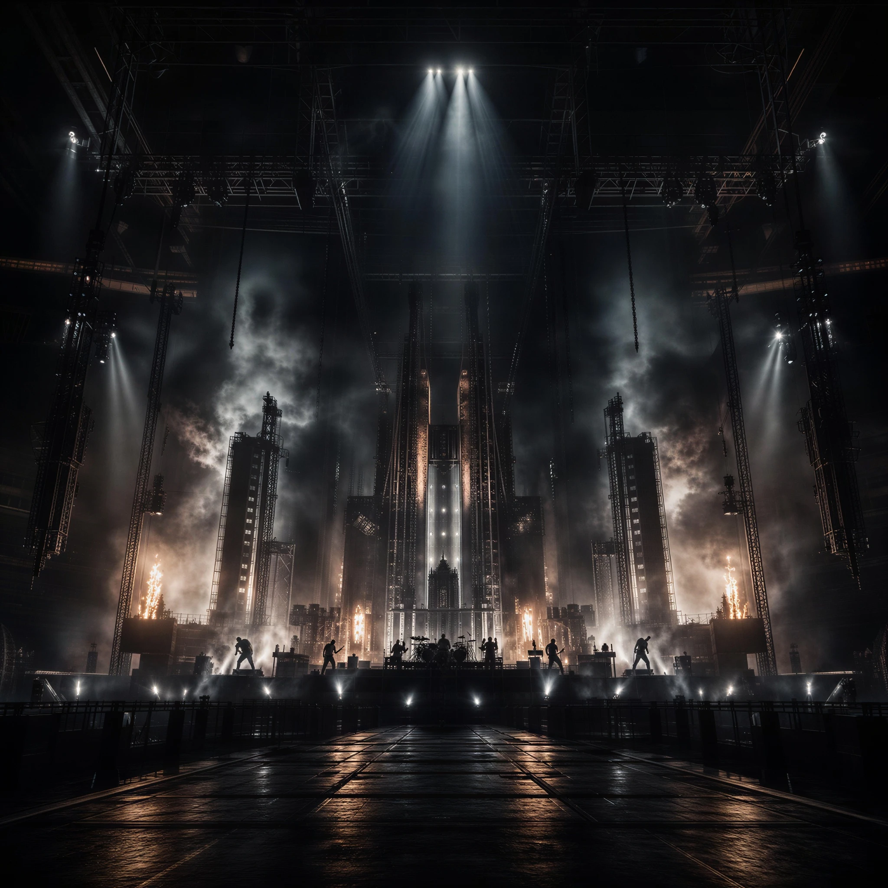
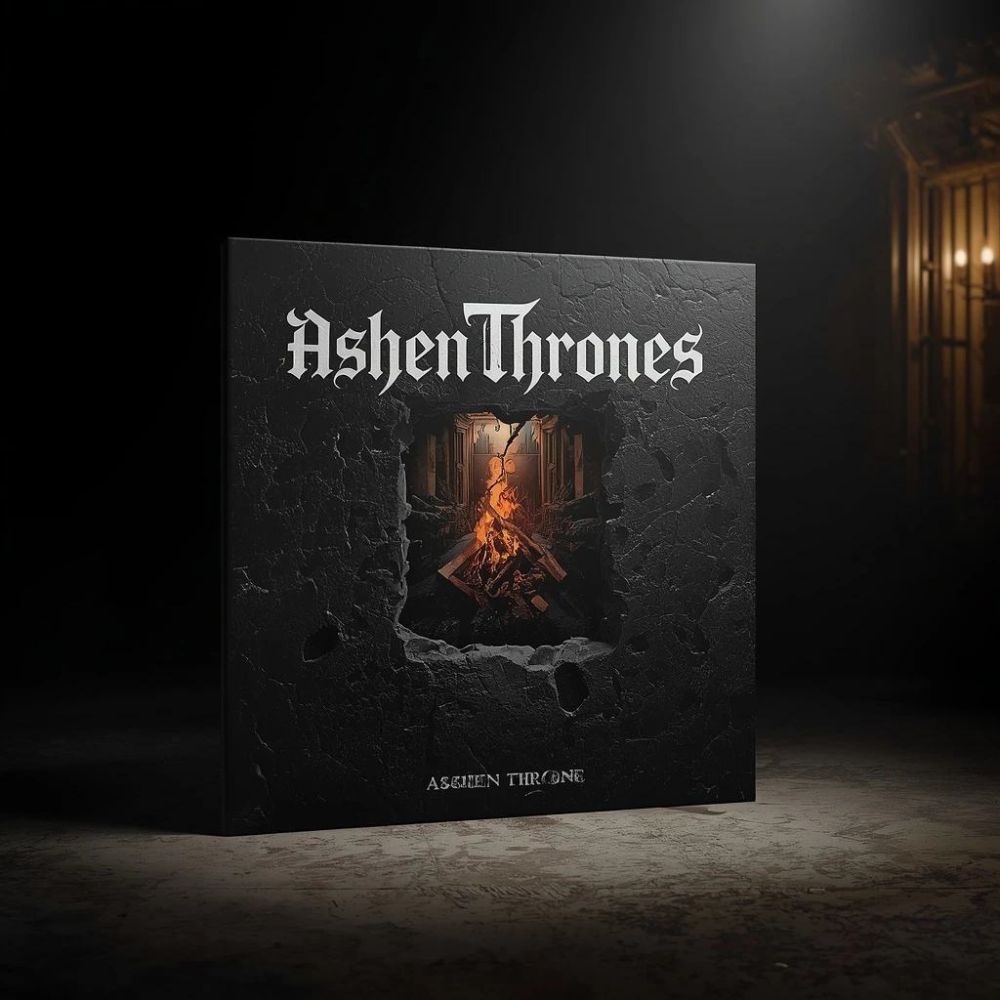
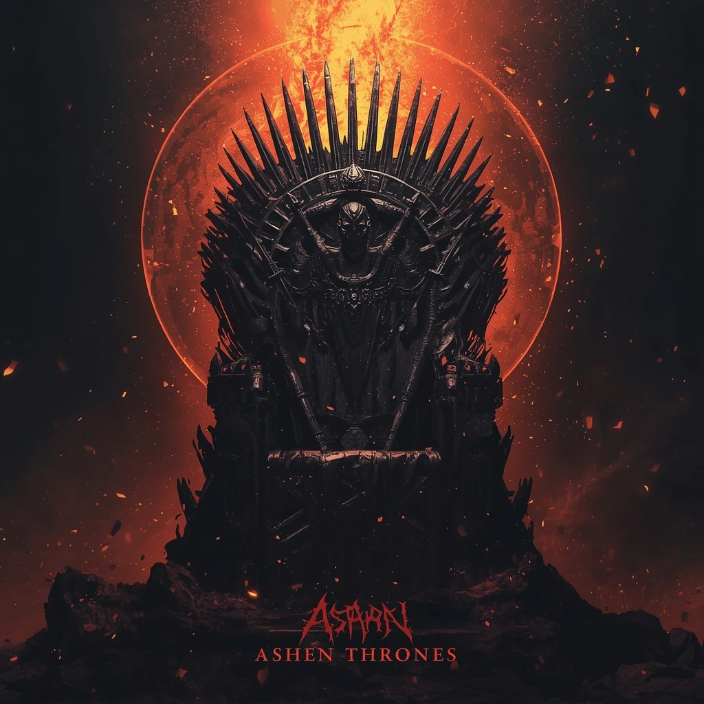
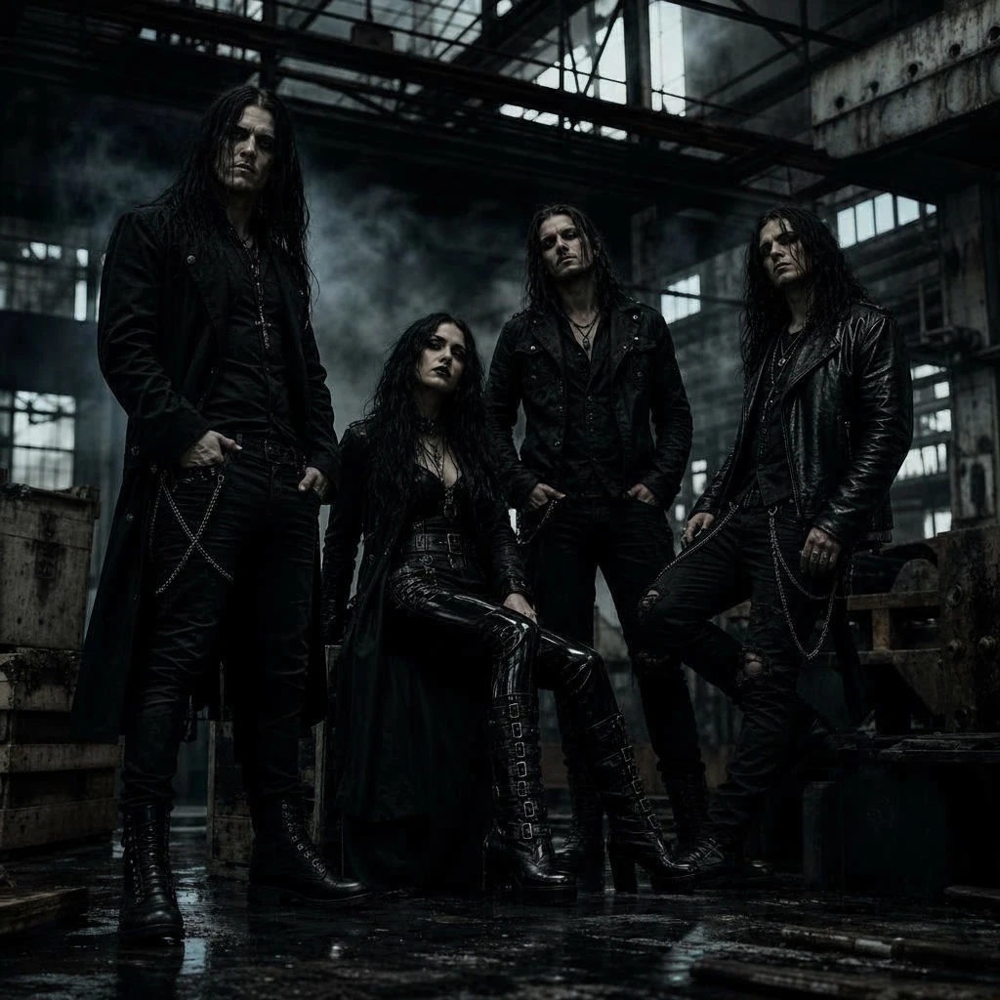
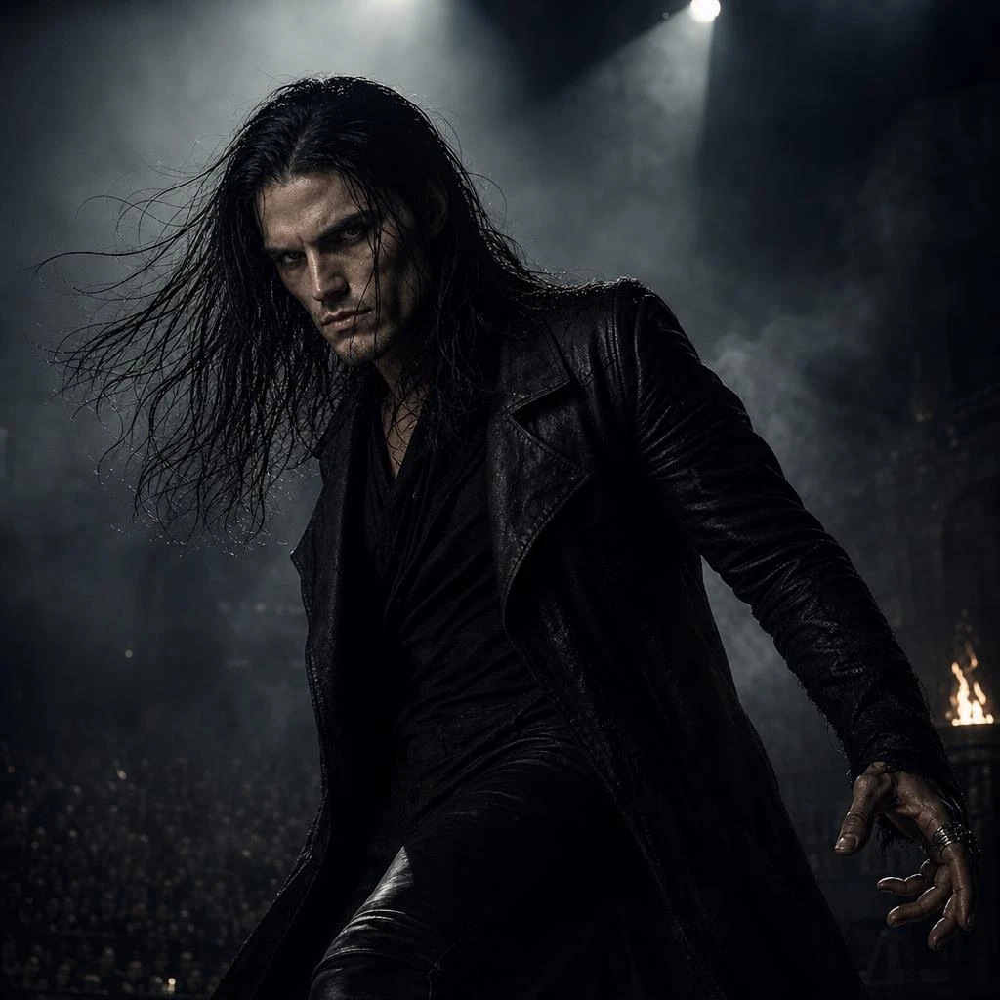
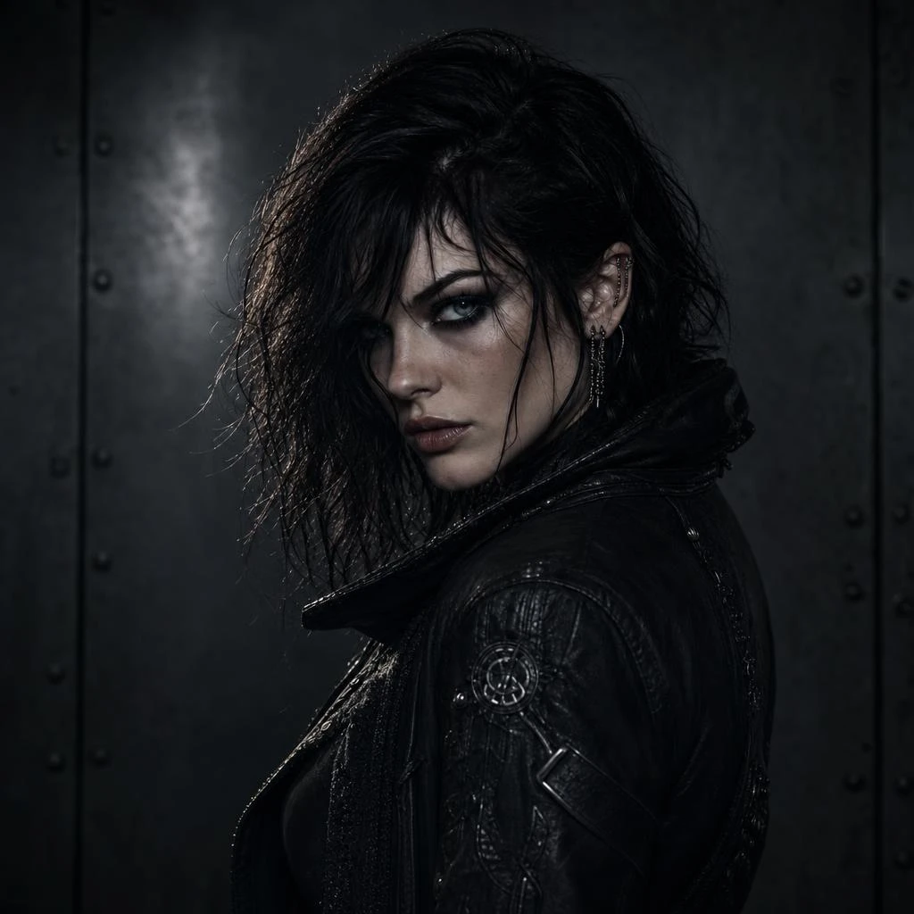
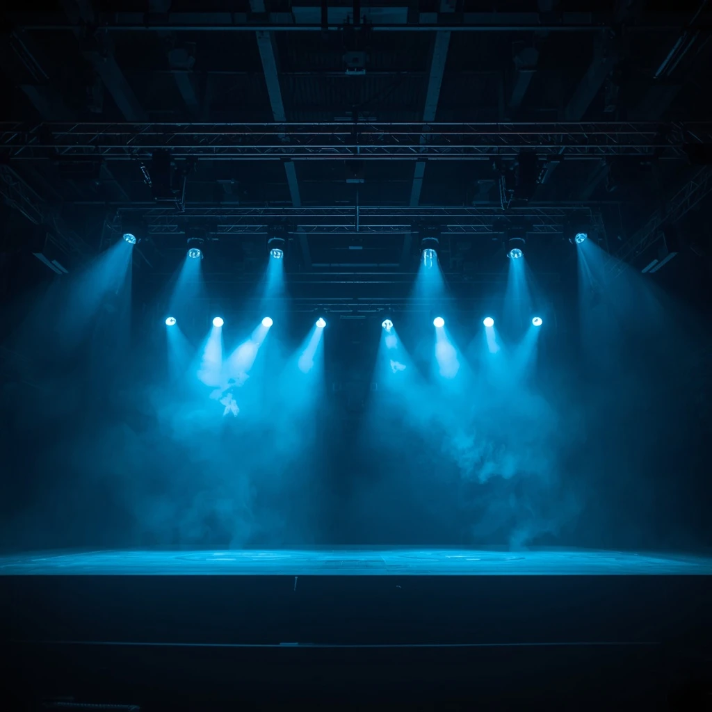
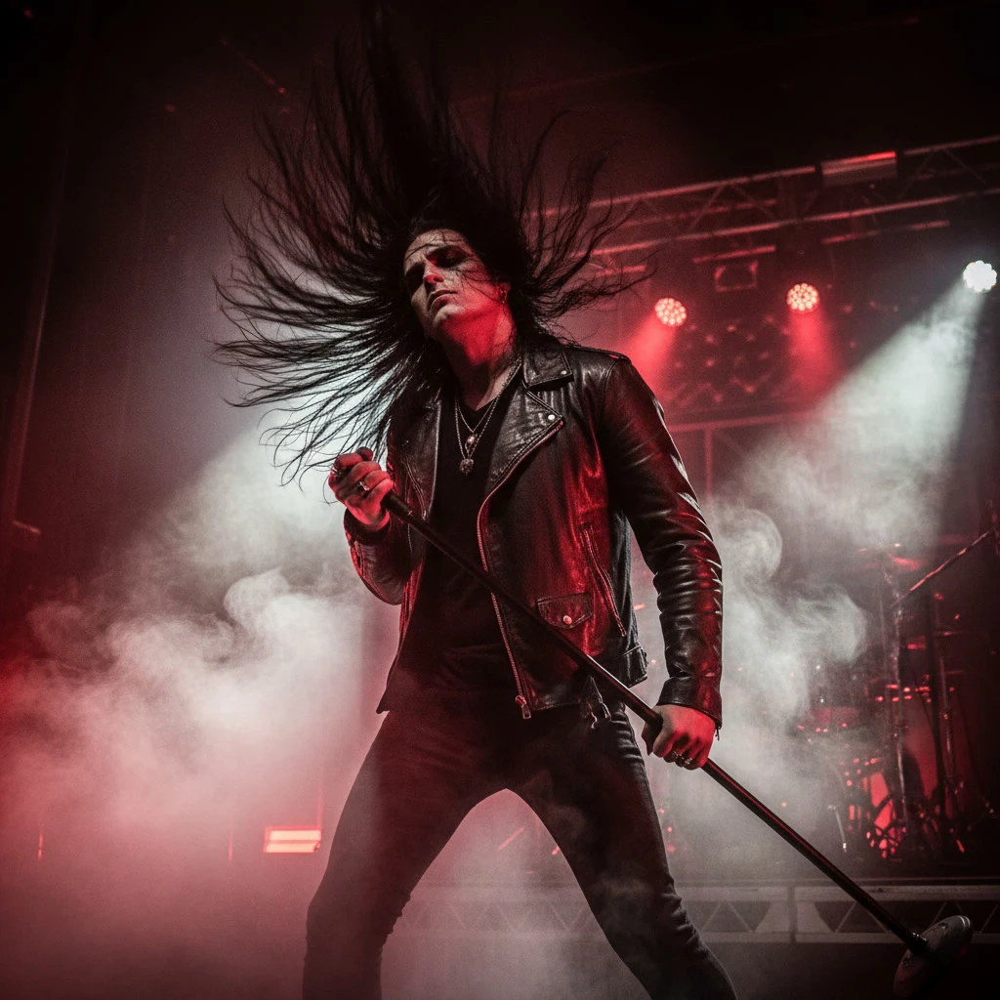
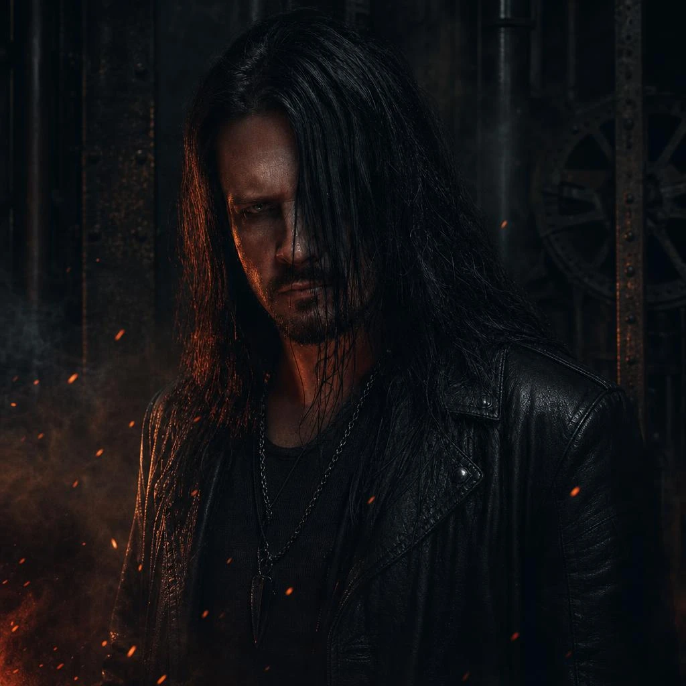
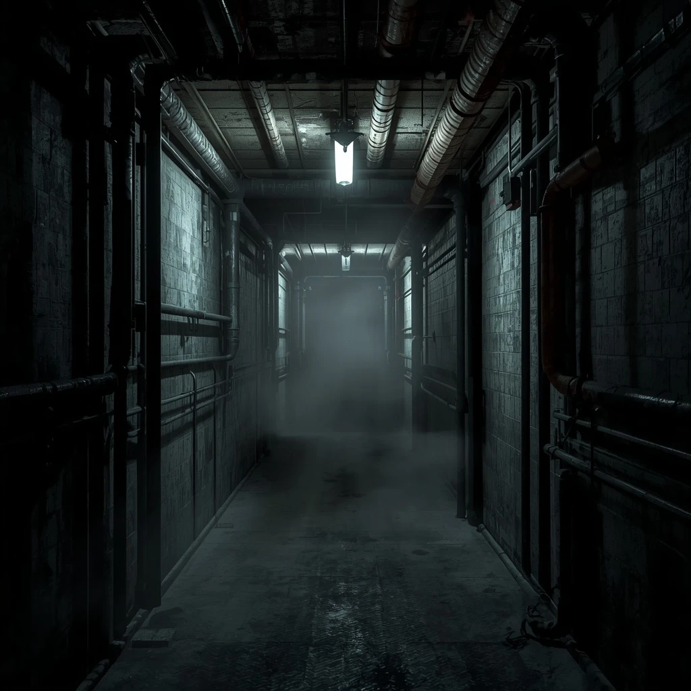

London
The O2
Tickets
Est. MMXVIII
Ashen Thrones World Rite · 2026
Cinematic heavy metal for the altar of the arena — myth in the riff, industry in the pulse, luxury in the ruin. Vesperfall is the hour the veil thins.
Enter the Discography

New Album Release
World Tour Dates
Three cathedral nights to open the campaign. Remaining territories announce at the next moon.
Band Origins
Vesperfall took shape in 2018 in Sheffield’s mill districts, where brick still held the heat of the last shift. Four players treated metal as liturgy: orchestral weight, industrial pulse, and a myth older than the foundry gates.
The name marks the thinning — vesper as dusk, fall as both descent and harvest. What they write is not volume for its own sake. It is a crown lowered onto smoke.

Media Gallery
Live stills, studio ash, and atmospheric portraits from the Ashen Thrones campaign. Scroll the vault.





